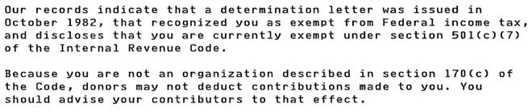

Paul WB6IBU et. al. Correction regarding charity. NCDXC is a 501 c7 per the IRS determination. Donations to a c7 are NOT deductible. Wish we were but the IRS has their mind made up. IRS letter to NCDXC excerpt:  73, Bob – W6OPO NCDXC Treasurer From: Chat <chat-bounces@ncdxc.org> On Behalf Of Paul Booth via Chat
Sent: Wednesday, April 24, 2019 10:02 AM
To: 'NCDXC Reflector' <chat@ncdxc.org>
Subject: [NCDXC Chat] Meeting topics ideas One of the great things about being a member of this club I’ve found is the wealth of information across the club and how helpful all the members can be. So I was thinking that our great leadership is burdened with the agenda of topics each meeting and this is something the members can contribute to and help out more as I know this can be a challenge. So here is a list I started, admittedly the topics were influenced by my interests but likely general too; in no particular order: - DX Etiquette: having been in, then out, then back in the dx scene after a number of years I’ve noticed an increase in bad behavior on the bands. Would be good to review and see what others are observing.
- FT8 Operation: would be nice for someone to present this, best way to configure and operate especially for newbies
- Receive Antennas: I’ve never used a separate receive antenna but I’ve learned a number of you do. Would be nice to hear what is being used and the benefits.
- Wayback Series: I’ve enjoyed Mike’s wayback story. It would be fun to see/hear others stories of their hamming through life as an occasional series a couple of times a year.
- Tower Erection: How to erect a tower, tools needed, safety, tips, etc.
- How to get in a DXpedition: Okay, this is on my bucket list. What is the best way to get involved in a dxpedition, what to learn, who to know, best way to prepare (or maybe after learning all this, the desire will disappear…..)
- QSLing: Saw this at Visalia and would be good to repeat at the meeting. I think there is some additional areas to explore like how to use ARRL service and back in the day I used WF5E service which is still there but run by someone else. Maybe QSLing is old fashion now with LOTW but I still like it.
- 160m DXing: last year I attended WB6RSE’s top-band dinner. Well that peaked my interest. 160m is a challenge especially with antennas. Would be good to hear how others have tackled it.
- 6 meter DXing: maybe not a the right time in the cycle but here again is another area which has special aspects to it for DXing.
- Auction: when I was young, way young (like 13) my dad used to drive me to the yearly ham radio auction at Ampex. I know that KE1B has a regular auction at San Lorenzo and it’s a lot of fun, he does a great job. With NCDXC in the bay area, and having just learned we qualify as a charity, might be interesting to host an auction, with contributions being tax deductible, or at least take a percentage, could potentially have a pretty large audience across the clubs in the bay area.
- Swap Night: maybe one of our evenings could involve a swap night amongst ourselves.
- Boat Anchors: Many of you have or are in the process of restoring a boat anchor. Would be fun to hear that story
- Product Reviews: Who has the last new accessory or radio that would be nice to see and hear a review?
- Remote Radio: Has anyone set up their station to remotely operated? This was something I was interested in more while I was working, not wanting to miss any DX that work got in the way.
Well for better or worse, this is the list I came up with. I’m sure there are other topics we might suggest to better assist our club officers for topics. 73s, Paul, W6IBU |